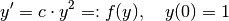
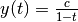
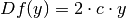
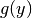
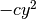
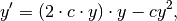

This page walks you through a quick example ODE and its solution with the Exp4 algorithm.
First, the right-hand side must be represented in a form suitable for an exponential integrator. We will use the simple example of a scalar quadratic ODE:

The exact solution is of course .
The Exp4 algorithm needs the Jacobian, which can be readily computed, as it is just the derivative:

The nonlinear part, , is then just , leading to the reformulation:

which of course is the same as the original equation.
This can now be implemented as follows:
Now it is time to choose an integrator and solve the problem. Since we want to use the adaptive Exp4 integrator, we call it as follows:
from expint.problems.QuadraticODE import QuadraticRHS
from expint.methods import Exp4_adaptive
e4 = Exp4_adaptive(QuadraticRHS(1))
t,y = e4.integrate(x0=1.0, t0=0.0, tend=0.9)
print "error:",abs(10-y[-1])